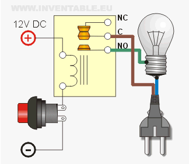

Este operador eléctrico está compuesto por cinco partes:
- Generador: Su función principal es convertir energía mecánica en energía eléctrica. Esto se logra a través de la rotación de una bobina dentro de un campo magnético, lo que genera una corriente eléctrica.
- Receptor: Tienen como función recibir y procesar señales eléctricas o electromagnéticas para convertirlas en información útil, como sonido, imagen o datos.
- Fusible: Protege los circuitos eléctricos y los dispositivos conectados al evitar que se produzcan sobrecargas o cortocircuitos.
- Interruptor: La función principal de un interruptor es controlar el flujo de corriente eléctrica en un circuito. Permite abrir o cerrar el circuito, lo que a su vez enciende o apaga los dispositivos conectados.
- Conductor: Su función es permitir el flujo de corriente eléctrica a través de él.
ELETRÓNICA BÁSICA Y DISEÑO DE CIRCUITOS
La electrónica básica es el estudio de los componentes y circuitos electrónicos fundamentales,
como resistencias, capacitores,
diodos y transistores. El diseño de circuitos implica la creación
de esquemas y la selección de componentes para construir
circuitos electrónicos que cumplan con ciertas
especificaciones.
La electrónica básica se utiliza para diseñar, construir y mantener dispositivos electrónicos, como computadoras, teléfonos móviles, televisores y sistemas de audio. También se utiliza en la industria automotriz, la medicina y la energía renovable.

ESTRUCTURAS ALGORITMICAS SECUENCIALES Y REPETITIVAS
Una estructura algorítmica es un patrón o modelo utilizado en programación para solucionar un problema específico de manera eficiente y ordenada.
Secuenciales: Las estructuras secuenciales son aquellas que indican la ejecución secuencial de una serie de instrucciones, es decir, se ejecutan en orden de arriba hacia abajo sin saltos ni desvíos. Es la estructura más básica en programación y se utiliza para realizar tareas simples y lineales.
Las estructuras algorítmicas repetitivas, también conocidas como ciclos, son patrones utilizados en programación para ejecutar un conjunto de instrucciones repetidamente hasta que se cumpla una condición. Estas estructuras permiten automatizar tareas y procesar datos de manera eficiente.